NIKOLAY RIMSKY-KORSAKOV
Principles
of Orchestration
with musical examples
drawn from his own works
Edited by
MAXIMILIAN STEINBERG
English translation by
EDWARD AGATE
[VOLUME II]
[Édition Russe de Musique, Paris, 1922]
CONTENTS
VOLUME I
The musical examples in this volume are taken from the composer's
following works:
W. BESSEL & CO., publishers, Petrograd.
"IVAN THE TERRIBLE", opera in 3 acts, 1894 edition.
"SNEGOUROTCHKA", opera in prologue and 4 acts (1880-1881).
"THE LEGEND OF TSAR SALTAN", opera in prologue and 4 acts (1899-1900).
"SERVILIA", opera in 5 acts (1900-1901).
"KASHTCHEÏ THE IMMORTAL", opera in 1 act of 3 scenes (1902).
"PAN VOYEVODA", opera in 4 acts (1902-1903).
"VERA SCHELOGA", prologue to "IVAN THE TERRIBLE", op. 54 (1898).
"ANTAR", symphonic suite (2nd symphony), new edition of 1897, published in 1913.
P. JURGENSON, publisher, Moscow.
"SADKO", symphonic poem, 1891-1892 edition.
"THE GOLDEN COCKEREL", opera in 3 acts (1906-1907).
M.P. BELAIEFF, publisher, Leipzig.
"THE MAY NIGHT", opera in 3 acts (1878-1879).
"MLADA", opera-ballet in 4 acts (1889-1890).
"THE CHRISTMAS NIGHT", opera in 4 acts (1894-1895).
"SADKO", opera-legend in 7 scenes (1895-1896).
"THE TSAR'S BRIDE", opera in 4 acts (1898).
"THE LEGEND OF THE INVISIBLE CITY OF KITESH AND THE MAID FEVRONIA",
opera in 4 acts (1903-1905).
"SPANISH CAPRICCIO", op. 34 (1887).
"SHEHERAZADE", symphonic suite from the "THOUSAND AND ONE NIGHTS",
op. 35 (1888).
"RUSSIAN EASTER FÊTE", Overture on Russian Church Themes, op. 36 (1888).
No. 1. “Sheherazade,” 2nd movement.
No. 1. „Shéhérazade,“ 2me mouvement.
[Vol. I p. 37]
[Listen] [XML] [PDF]
No. 2. “The Legend of the invisible city of Kitesh.”
No. 2. „Légende de la ville invisible de Kitéj.“
[Vol. I p. 37]
[Listen] [XML] [PDF]
No. 3. “Spanish Capriccio.”
No. 3. „Capriccio Espagnol.“
[Vol. I p. 37]
[Listen] [XML] [PDF]
No. 4. “Pan Voyevoda.”
No. 4. „Pan le Voïevode.“
[Vol. I p. 37]
[Listen] [XML] [PDF]
No. 5. “The Golden Cockerel.”
No. 5. „Le Coq d’Or.“
[Vol. I p. 37]
[Listen] [XML] [PDF]
No. 6. “Sadko,” symphonic tableau (p. 28).
No. 6. „Sadko,“ tableau symphonique (p. 28).
[Vol. I p. 37]
[Listen] [XML] [PDF]

No. 7. “Pan Voyevoda,” nocturne.
No. 7. „Pan le Voïevode,“ nocturne.
[Vol. I p. 38]
[Listen] [XML] [PDF]
No. 8. “Snegourotchka.”
No. 8. „Sniégourotchka.“
[Vol. I p. 38]
[Listen] [XML] [PDF]
No. 9. “Snegourotchka.”
No. 9. „Sniégourotchka.“
[Vol. I p. 38]
[Listen] [XML] [PDF]
No. 10. “The Legend of the invisible city of Kitesh.”
No. 10. „Légende de la ville invisible de Kitéj.“
[Vol. I p. 38]
[Listen] [XML] [PDF]
No. 11. “The Golden Cockerel.”
No. 11. „Le Coq d’Or.“
[Vol. I p. 38]
[Listen] [XML] [PDF]
No. 12. “Sheherazade,” 3rd movement (commencement).
No. 12. „Shéhérazade,“ 3me mouvement (début).
[Vol. I p. 39]
[Listen] [XML] [PDF]
No. 13. “The Golden Cockerel” (p. 87).
No. 13. „Le Coq d’Or“ (p. 87).
[Vol. I p. 39]
[Listen] [XML] [PDF]
No. 14. “Sadko.”
No. 14. „Sadko.“
[Vol. I p. 39]
[Listen] [XML] [PDF]
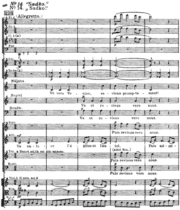
No. 15. “Snegourotchka.”
No. 15. „Sniégourotchka.“
[Vol. I p. 39]
[Listen] [XML] [PDF]

No. 16. “The Golden Cockerel” (p. 88).
No. 16. „Le Coq d’Or“ (p. 88).
[Vol. I p. 39]
[Listen] [XML] [PDF]
No. 17. “Snegourotchka.”
No. 17. „Sniégourotchka.“
[Vol. I p. 40]
[Listen] [XML] [PDF]
No. 18. “The May Night,” Act III.
No. 1. „La Nuit de Mai,“ 3me acte.
[Vol. I p. 40]
[Listen] [XML] [PDF]
No. 19. “Sheherazade,” 2nd movement.
No. 19. „Shéhérazade,“ 2me mouvement.
[Vol. I p. 40]
[Listen] [XML] [PDF]
No. 20. “Sadko.”
No. 20. „Sadko.“
[Vol. I p. 40]
[Listen] [XML] [PDF]
No. 21. “The Legend of the invisible city of Kitesh.”
No. 21. „Légende de la ville invisible de Kitéj.“
[Vol. I p. 40]
[Listen] [XML] [PDF]
No. 22. “The Tsar’s Bride.”
No. 22. „La Fiancée du Tsar.“
[Vol. I p. 41]
[Listen] [XML] [PDF]

No. 23. “The Legend of Tsar Saltan.”
No. 23. „Légende du Tsar Saltan.“
[Vol. I p. 41]
[Listen] [XML] [PDF]
No. 24. “Sadko” (p. 336).
No. 24. „Sadko“ (p. 336).
[Vol. I p. 41]
[Listen] [XML] [PDF]
No. 25. “Ivan the Terrible,” Act III.
No. 25. „La Pskovitaine,“ 3me acte.
[Vol. I p. 41]
[Listen] [XML] [PDF]
No. 26. “Snegourotchka.”
No. 26. „Sniégourotchka.“
[Vol. I p. 42]
[Listen] [XML] [PDF]
No. 27. “Sadko” (p. 296).
No. 27. „Sadko“ (p. 296).
[Vol. I p. 42]
[Listen] [XML] [PDF]
No. 28. “Snegourotchka.”
No. 28. „Sniégourotchka.“
[Vol. I p. 42]
[Listen] [XML] [PDF]
No. 29. “Antar.”
No. 29. „Antar.“
[Vol. I p. 43]
[Listen] [XML] [PDF]
No. 30. “Sheherazade,” 3rd movement (p. 131).
No. 30. „Shéhérazade,“ 3me mouvement (p. 131).
[Vol. I p. 43]
[Listen] [XML] [PDF]
No. 31. “The Legend of the invisible city of Kitesh.”
No. 31. „Légende de la ville invisible de Kitéj.“
[Vol. I p. 43]
[Listen] [XML] [PDF]
No. 32. “Antar.”
No. 32. „Antar.“
[Vol. I p. 44]
[Listen] [XML] [PDF]
No. 33. “Snegourotchka.”
No. 33. „Sniégourotchka.“
[Vol. I p. 44]
[Listen] [XML] [PDF]
No. 34. “The Legend of the invisible city of Kitesh.”
No. 34. „Légende de la ville invisible de Kitéj.“
[Vol. I p. 45]
[Listen] [XML] [PDF]
No. 35. “Spanish Capriccio.”
No. 35. „Capriccio Espagnol.“
[Vol. I p. 46]
[Listen] [XML] [PDF]
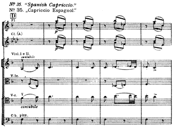
No. 36. “The Legend of Tsar Saltan.”
No. 36. „Légende du Tsar Saltan.“
[Vol. I p. 46]
[Listen] [XML] [PDF]
No. 37. “Sheherazade,” 4th movement (p. 140).
No. 37. „Shéhérazade,“ 4me mouvement (p. 140).
[Vol. I p. 46]
[Listen] [XML] [PDF]
No. 38. “Ivan the Terrible,” Act III (p. 236).
No. 38. „La Pskovitaine,“ 3me acte (p. 236).
[Vol. I p. 46]
[Listen] [XML] [PDF]
No. 39. “The Legend of the invisible city of Kitesh.”
No. 39. „Légende de la ville invisible de Kitéj.“
[Vol. I p. 46]
[Listen] [XML] [PDF]
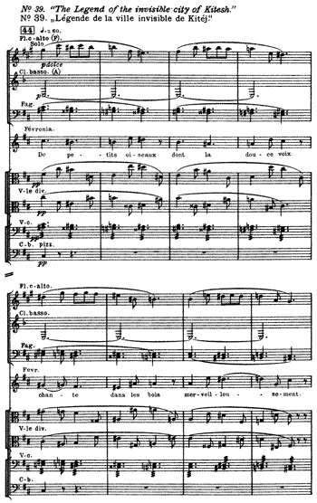
No. 40. “Sheherazade,” 2nd movement (p. 43).
No. 40. „Shéhérazade,“ 2me mouvement (p. 43).
[Vol. I p. 46]
[Listen] [XML] [PDF]
No. 41. “Snegourotchka.”
No. 41. „Sniégourotchka.“
[Vol. I p. 46]
[Listen] [XML] [PDF]
No. 42. “The Golden Cockerel” (p. 75).
No. 42. „Le Coq d’Or“ (p. 75).
[Vol. I p. 46]
[Listen] [XML] [PDF]
No. 43. “The Golden Cockerel” (p. 119).
No. 43. „Le Coq d’Or“ (p. 119).
[Vol. I p. 46]
[Listen] [XML] [PDF]
No. 44. “Spanish Capriccio.”
No. 44. „Capriccio Espagnol.“
[Vol. I p. 46]
[Listen] [XML] [PDF]
No. 45. “The Golden Cockerel.”
No. 45. „Le Coq d’Or.“
[Vol. I p. 46]
[Listen] [XML] [PDF]
No. 46. “Mlada,” Act II (p. 206).
No. 46. „Mlada,“ 2me acte (p. 206).
[Vol. I p. 47]
[Listen] [XML] [PDF]
No. 47. “Snegourotchka.”
No. 47. „Sniégourotchka.“
[Vol. I p. 47]
[Listen] [XML] [PDF]
No. 48. “Snegourotchka.”
No. 48. „Sniégourotchka.“
[Vol. I p. 47]
[Listen] [XML] [PDF]
No. 49. “Vera Scheloga.”
No. 49. „La Boïarine Véra Chéloga.“
[Vol. I p. 47]
[Listen] [XML] [PDF]
No. 50. “The Golden Cockerel” (p. 330).
No. 50. „Le Coq d’Or“ (p. 330).
[Vol. I p. 47]
[Listen] [XML] [PDF]
No. 51. “Mlada,” Act III (p. 359).
No. 51. „Mlada,“ 3me acte (p. 359).
[Vol. I p. 47]
[Listen] [XML] [PDF]
No. 52. “Snegourotchka.”
No. 52. „Sniégourotchka.“
[Vol. I p. 47]
[Listen] [XML] [PDF]
No. 53. “The Legend of the invisible city of Kitesh” (p. 491).
No. 53. „Légende de la ville invisible de Kitéj“ (p. 491).
[Vol. I p. 47]
[Listen] [XML] [PDF]
No. 54. “Snegourotchka” (p. 133).
No. 54. „Sniégourotchka“ (p. 133).
[Vol. I p. 47]
[Listen] [XML] [PDF]
No. 55. “Snegourotchka” (p. 365).
No. 55. „Sniégourotchka“ (p. 365).
[Vol. I p. 48]
[Listen] [XML] [PDF]
No. 56. “Spanish Capriccio.”
No. 56. „Capriccio Espagnol.“
[Vol. I p. 49]
[Listen] [XML] [PDF]
No. 57. “Snegourotchka” (p. 306).
No. 57. „Sniégourotchka“ (p. 306).
[Vol. I p. 49]
[Listen] [XML] [PDF]
No. 58. “Sheherazade,” 3rd movement.
No. 58. „Shéhérazade,“ 3me mouvement.
[Vol. I p. 49]
[Listen] [XML] [PDF]
No. 59. “Vera Scheloga.”
No. 59. „La Boïarine Véra Chéloga.“
[Vol. I p. 49]
[Listen] [XML] [PDF]
No. 60. “Mlada,” Act III (p. 389).
No. 60. „Mlada,“ 3me acte (p. 389).
[Vol. I p. 50]
[Listen] [XML] [PDF]
No. 61. “Mlada,” Act II (p. 205).
No. 61. „Mlada,“ 2me acte (p. 205).
[Vol. I p. 50]
[Listen] [XML] [PDF]
No. 62. “Servilia.”
No. 62. „Servilia.“
[Vol. I p. 51]
[Listen] [XML] [PDF]
No. 63. “The Tsar’s Bride.”
No. 63. „La Fiancée du Tsar.“
[Vol. I p. 51]
[Listen] [XML] [PDF]
No. 64. “Spanish Capriccio” (p. 57).
No. 64. „Capriccio Espagnol“ (p. 57).
[Vol. I p. 51]
[Listen] [XML] [PDF]
No. 65. “Antar,” 1st version, 3rd movement (commencement).
No. 65. „Antar,“ première version, 3me mouvement (début).
[Vol. I p. 51]
[Listen] [XML] [PDF]
No. 66. “Sheherazade,” 3rd movement.
No. 66. „Shéhérazade,“ 3me mouvement.
[Vol. I p. 51]
[Listen] [XML] [PDF]
No. 67. “Spanish Capriccio” (p. 79).
No. 67. „Capriccio Espagnol“ (p. 79).
[Vol. I p. 52]
[Listen] [XML] [PDF]
No. 68. “The Christmas Night.”
No. 68. „La Nuit de Noël.“
[Vol. I p. 52]
[Listen] [XML] [PDF]
No. 69. “The Legend of the invisible city of Kitesh.”
No. 69. „Légende de la ville invisible de Kitéj.“
[Vol. I p. 53]
[Listen] [XML] [PDF]
No. 70. “The Legend of the invisible city of Kitesh.”
No. 70. „Légende de la ville invisible de Kitéj.“
[Vol. I p. 54]
[Listen] [XML] [PDF]
No. 71. “Sadko.”
No. 71. „Sadko.“
[Vol. I p. 54]
[Listen] [XML] [PDF]
No. 72. “Snegourotchka.”
No. 72. „Sniégourotchka.“
[Vol. I p. 54]
[Listen] [XML] [PDF]
No. 73. “Antar,” 3rd movement.
No. 73. „Antar,“ 3me mouvement.
[Vol. I p. 54]
[Listen] [XML] [PDF]
No. 74. “Sheherazade,” 2nd movement (p. 51).
No. 74. „Shéhérazade,“ 2me mouvement (p. 51).
[Vol. I p. 55]
[Listen] [XML] [PDF]
No. 75. “Sadko” (p. 498).
No. 75. „Sadko“ (p. 498).
[Vol. I p. 55]
[Listen] [XML] [PDF]
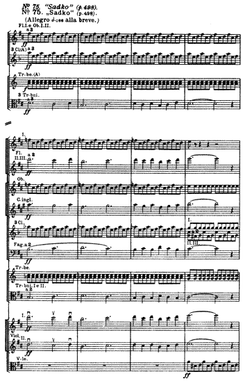
No. 76. “The May Night,” Act III (commencement).
No. 76. „La Nuit de Mai,“ 3me acte (début).
[Vol. I p. 55]
[Listen] [XML] [PDF]
No. 77. “Sheherazade,” 4th movement (p. 204).
No. 77. „Shéhérazade,“ 4me mouvement (p. 204).
[Vol. I p. 55]
[Listen] [XML] [PDF]
No. 78. “Mlada,” Act III (p. 350).
No. 78. „Mlada,“ 3me acte (p. 350).
[Vol. I p. 58]
[Listen] [XML] [PDF]
No. 79. “Mlada,” Act III (p. 370).
No. 79. „Mlada,“ 3me acte (p. 370).
[Vol. I p. 58]
[Listen] [XML] [PDF]
No. 80. “The May Night,” Act III.
No. 80. „La Nuit de Mai,“ 3me acte.
[Vol. I p. 59]
[Listen] [XML] [PDF]
No. 81. “Sadko.”
No. 81. „Sadko.“
[Vol. I p. 59]
[Listen] [XML] [PDF]
No. 82. “Sadko.”
No. 82. „Sadko.“
[Vol. I p. 59]
[Listen] [XML] [PDF]
No. 83. “Sadko.”
No. 83. „Sadko.“
[Vol. I p. 59]
[Listen] [XML] [PDF]

No. 84. “The Legend of Tsar Saltan” (p. 54).
No. 84. „Légende du Tsar Saltan“ (p. 54).
[Vol. I p. 59]
[Listen] [XML] [PDF]
No. 85. “Ivan the Terrible,” overture (beginning).
No. 85. „La Pskovitaine,“ ouverture (début).
[Vol. I p. 59]
[Listen] [XML] [PDF]
No. 86. “Sadko.”
No. 86. „Sadko.“
[Vol. I p. 59]
[Listen] [XML] [PDF]
No. 87. “Kashtcheï the Immortal.”
No. 87. „Kachtchéï l’Immortel.“
[Vol. I p. 60]
[Listen] [XML] [PDF]
No. 88. “Servilia.”
No. 88. „Servilia.“
[Vol. I p. 60]
[Listen] [XML] [PDF]
No. 89. “Servilia.”
No. 89. „Servilia.“
[Vol. I p. 60]
[Listen] [XML] [PDF]
No. 90. “Sheherazade,” 4th part.
No. 90. „Shéhérazade,“ 4me partie.
[Vol. I p. 60]
[Listen] [XML] [PDF]
No. 91. “The Legend of Tsar Saltan.”
No. 91. „Légende du Tsar Saltan.“
[Vol. I p. 61]
[Listen] [XML] [PDF]
No. 92. “The Golden Cockerel.”
No. 92. „Le Coq d’Or.“
[Vol. I p. 61]
[Listen] [XML] [PDF]
No. 93. “Snegourotchka” (p. 269).
No. 93. „Sniégourotchka“ (p. 269).
[Vol. I p. 61]
[Listen] [XML] [PDF]
No. 94. “Snegourotchka” (p. 271).
No. 94. „Sniégourotchka“ (p. 271).
[Vol. I p. 61]
[Listen] [XML] [PDF]
No. 95. “Snegourotchka.”
No. 95. „Sniégourotchka.“
[Vol. I p. 62]
[Listen] [XML] [PDF]
No. 96. “Ivan the Terrible,” Act III (p. 318).
No. 96. „La Pskovitaine,“ 3me acte (p. 318).
[Vol. I p. 62]
[Listen] [XML] [PDF]
No. 97. “Snegourotchka.”
No. 97. „Sniégourotchka.“
[Vol. I p. 69]
[Listen] [XML] [PDF]
No. 98. “The Legend of Tsar Saltan.”
No. 98. „Légende du Tsar Saltan.“
[Vol. I p. 69]
[Listen] [XML] [PDF]
No. 99. “Snegourotchka” (p. 145).
No. 99. „Sniégourotchka“ (p. 145).
[Vol. I p. 70]
[Listen] [XML] [PDF]
No. 100. “The Christmas Night.”
No. 100. „La Nuit de Noël.“
[Vol. I p. 70]
[Listen] [XML] [PDF]
No. 101. “The Christmas Night.”
No. 101. „La Nuit de Noël.“
[Vol. I p. 70]
[Listen] [XML] [PDF]
No. 102. “Snegourotchka.”
No. 102. „Sniégourotchka.“
[Vol. I p. 71]
[Listen] [XML] [PDF]
No. 103. “The Legend of the invisible city of Kitesh.”
No. 103. „Légende de la ville invisible de Kitéj.“
[Vol. I p. 71]
[Listen] [XML] [PDF]
No. 104. “The Golden Cockerel.”
No. 104. „Le Coq d’Or.“
[Vol. I p. 71]
[Listen] [XML] [PDF]
No. 105. “The Christmas Night” (p. 247).
No. 105. „La Nuit de Noël“ (p. 247).
[Vol. I p. 80]
[Listen] [XML] [PDF]
No. 106. “The Christmas Night,” Prelude.
No. 106. „La Nuit de Noël,“ Prélude.
[Vol. I p. 80]
[Listen] [XML] [PDF]
No. 107. “Snegourotchka.”
No. 107. „Sniégourotchka.“
[Vol. I p. 80]
[Listen] [XML] [PDF]
No. 108. “Snegourotchka.”
No. 108. „Sniégourotchka.“
[Vol. I p. 80]
[Listen] [XML] [PDF]
No. 109. “Sheherazade,” 1st movement (p. 3).
No. 109. „Shéhérazade,“ 1er mouvement (p. 3).
[Vol. I p. 80]
[Listen] [XML] [PDF]
No. 110. “The Legend of Tsar Saltan” (p. 197).
No. 110. „Légende du Tsar Saltan“ (p. 197).
[Vol. I p. 80]
[Listen] [XML] [PDF]
No. 111. “The Legend of Tsar Saltan.”
No. 111. „Légende du Tsar Saltan.“
[Vol. I p. 80]
[Listen] [XML] [PDF]
No. 112. “Sadko,” (opening of the 2nd tableau).
No. 112. „Sadko,“ (début du 2me tableau).
[Vol. I p. 81]
[Listen] [XML] [PDF]
No. 113. “The Tsar’s Bride.”
No. 113. „La Fiancée du Tsar.“
[Vol. I p. 81]
[Listen] [XML] [PDF]
No. 114. “The Legend of the invisible city of Kitesh” (p. 127).
No. 114. „Légende de la ville invisible de Kitéj“ (p. 127).
[Vol. I p. 81]
[Listen] [XML] [PDF]
No. 115. “The Legend of the invisible city of Kitesh” (p. 257).
No. 115. „Légende de la ville invisible de Kitéj“ (p. 257).
[Vol. I p. 81]
[Listen] [XML] [PDF]
No. 116. “The Legend of the invisible city of Kitesh.”
No. 116. „Légende de la ville invisible de Kitéj.“
[Vol. I p. 81]
[Listen] [XML] [PDF]
No. 117. “The Golden Cockerel” (p. 315).
No. 117. „Le Coq d’Or“ (p. 315).
[Vol. I p. 81]
[Listen] [XML] [PDF]
No. 118. “Snegourotchka.”
No. 118. „Sniégourotchka.“
[Vol. I p. 81]
[Listen] [XML] [PDF]
No. 119. “Snegourotchka.”
No. 119. „Sniégourotchka.“
[Vol. I p. 81]
[Listen] [XML] [PDF]
No. 120. “Sadko.”
No. 120. „Sadko.“
[Vol. I p. 81]
[Listen] [XML] [PDF]
No. 121. “Sadko.”
No. 121. „Sadko.“
[Vol. I p. 82]
[Listen] [XML] [PDF]
No. 122. “Sadko.”
No. 122. „Sadko.“
[Vol. I p. 82]
[Listen] [XML] [PDF]
No. 123. “Kashtcheï the Immortal” (p. 119).
No. 123. „Kachtchéï l’Immortel“ (p. 119).
[Vol. I p. 82]
[Listen] [XML] [PDF]
No. 124. “The Legend of the invisible city of Kitesh.”
No. 124. „Légende de la ville invisible de Kitéj.“
[Vol. I p. 82]
[Listen] [XML] [PDF]
No. 125. “The Legend of the invisible city of Kitesh” (p. 392).
No. 125. „Légende de la ville invisible de Kitéj“ (p. 392).
[Vol. I p. 82]
[Listen] [XML] [PDF]
No. 126. “The Legend of the invisible city of Kitesh” (p. 517).
No. 126. „Légende de la ville invisible de Kitéj“ (p. 517).
[Vol. I p. 82]
[Listen] [XML] [PDF]
No. 127. “The Golden Cockerel.”
No. 127. „Le Coq d’Or.“
[Vol. I p. 82]
[Listen] [XML] [PDF]

No. 128. “The Golden Cockerel.”
No. 128. „Le Coq d’Or.“
[Vol. I p. 82]
[Listen] [XML] [PDF]
No. 129. “Snegourotchka” (p. 350).
No. 129. „Sniégourotchka“ (p. 350).
[Vol. I p. 87]
[Listen] [XML] [PDF]
No. 130. “Sadko.”
No. 130. „Sadko.“
[Vol. I p. 87]
[Listen] [XML] [PDF]
No. 131. “Sadko.”
No. 131. „Sadko.“
[Vol. I p. 87]
[Listen] [XML] [PDF]
No. 132. “The Christmas Night” (p. 309).
No. 132. „La Nuit de Noël“ (p. 309).
[Vol. I p. 87]
[Listen] [XML] [PDF]
No. 133. “The Legend of Tsar Saltan.”
No. 133. „Légende du Tsar Saltan.“
[Vol. I p. 87]
[Listen] [XML] [PDF]
No. 134. “The Legend of the invisible city of Kitesh.”
No. 134. „Légende de la ville invisible de Kitéj.“
[Vol. I p. 87]
[Listen] [XML] [PDF]
No. 135. “The Golden Cockerel” (p. 143).
No. 135. „Le Coq d’Or“ (p. 143).
[Vol. I p. 87]
[Listen] [XML] [PDF]
No. 136. “Snegourotchka” (p. 97).
No. 136. „Sniégourotchka“ (p. 97).
[Vol. I p. 87]
[Listen] [XML] [PDF]
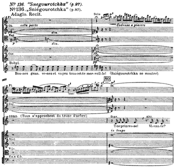
No. 137. “Servilia.”
No. 137. „Servilia.“
[Vol. I p. 87]
[Listen] [XML] [PDF]
No. 138. “The Legend of Tsar Saltan.”
No. 138. „Légende du Tsar Saltan.“
[Vol. I p. 87]
[Listen] [XML] [PDF]
No. 139. “The Legend of the invisible city of Kitesh.”
No. 139. „Légende de la ville invisible de Kitéj.“
[Vol. I p. 87]
[Listen] [XML] [PDF]

No. 140. “The Legend of the invisible city of Kitesh.”
No. 140. „Légende de la ville invisible de Kitéj.“
[Vol. I p. 87]
[Listen] [XML] [PDF]
No. 141. “The Tsar’s Bride.”
No. 141. „La Fiancée du Tsar.“
[Vol. I p. 88]
[Listen] [XML] [PDF]

No. 142. “The Tsar’s Bride” (p. 247).
No. 142. „La Fiancée du Tsar“ (p. 247).
[Vol. I p. 88]
[Listen] [XML] [PDF]
No. 143. “The Christmas Night.”
No. 143. „La Nuit de Noël.“
[Vol. I p. 88]
[Listen] [XML] [PDF]
No. 144. “Sadko” (p. 121; woodwind alone).
No. 144. „Sadko“ (p. 121; instruments à vent seuls).
[Vol. I p. 89]
[Listen] [XML] [PDF]
No. 145. “Sadko.”
No. 145. „Sadko.“
[Vol. I p. 89]
[Listen] [XML] [PDF]
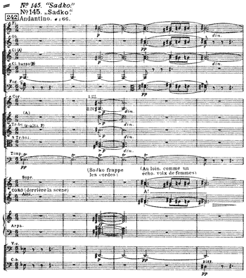
No. 146. “The Legend of the invisible city of Kitesh.”
No. 146. „Légende de la ville invisible de Kitéj.“
[Vol. I p. 89]
[Listen] [XML] [PDF]
No. 147. “The Golden Cockerel.”
No. 147. „Le Coq d’Or.“
[Vol. I p. 89]
[Listen] [XML] [PDF]
No. 148. “Russian Easter Fête” (p. 11).
No. 148. „La Grande Pâque Russe“ (p. 11).
[Vol. I p. 89]
[Listen] [XML] [PDF]
No. 149. “The Legend of Tsar Saltan.”
No. 149. „Légende du Tsar Saltan.“
[Vol. I p. 89]
[Listen] [XML] [PDF]
No. 150. “The Legend of Tsar Saltan” (p. 219).
No. 150. „Légende du Tsar Saltan“ (p. 219).
[Vol. I p. 89]
[Listen] [XML] [PDF]
No. 151. “Antar.”
No. 151. „Antar.“
[Vol. I p. 89]
[Listen] [XML] [PDF]
No. 152. “Antar.”
No. 152. „Antar.“
[Vol. I p. 91]
[Listen] [XML] [PDF]
No. 153. “The Christmas Night” (p. 376).
No. 153. „La Nuit de Noël“ (p. 376).
[Vol. I p. 91]
[Listen] [XML] [PDF]
No. 154. “Sadko.”
No. 154. „Sadko.“
[Vol. I p. 91]
[Listen] [XML] [PDF]
No. 155. “Servilia.”
No. 155. „Servilia.“
[Vol. I p. 91]
[Listen] [XML] [PDF]
No. 156. “The Legend of the invisible city of Kitesh” (p. 252).
No. 156. „Légende de la ville invisible de Kitéj“ (p. 252).
[Vol. I p. 91]
[Listen] [XML] [PDF]
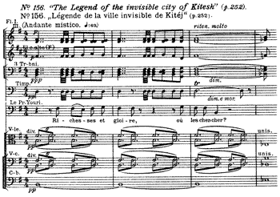
No. 157. “Antar.”
No. 157. „Antar.“
[Vol. I p. 91]
[Listen] [XML] [PDF]

No. 158. “Ivan the Terrible,” Act I.
No. 158. „La Pskovitaine,“ 1er acte.
[Vol. I p. 92]
[Listen] [XML] [PDF]
No. 159. “Snegourotchka” (p. 223).
No. 159. „Sniégourotchka“ (p. 223).
[Vol. I p. 92]
[Listen] [XML] [PDF]
No. 160. “Sadko” (p. 231).
No. 160. „Sadko“ (p. 231).
[Vol. I p. 92]
[Listen] [XML] [PDF]
No. 161. “The Legend of Tsar Saltan” (p. 80).
No. 161. „Légende du Tsar Saltan“ (p. 80).
[Vol. I p. 92]
[Listen] [XML] [PDF]
No. 162. “The Legend of Tsar Saltan” (p. 92).
No. 162. „Légende du Tsar Saltan“ (p. 92).
[Vol. I p. 92]
[Listen] [XML] [PDF]
No. 163. “The Legend of the invisible city of Kitesh.”
No. 163. „Légende de la ville invisible de Kitéj.“
[Vol. I p. 92]
[Listen] [XML] [PDF]
No. 164. “The Legend of the invisible city of Kitesh” (p. 400).
No. 164. „Légende de la ville invisible de Kitéj“ (p. 400).
[Vol. I p. 92]
[Listen] [XML] [PDF]

No. 165. “The May Night,” Act I (p. 105).
No. 165. „La Nuit de Mai,“ 1er acte (p. 105).
[Vol. I p. 93]
[Listen] [XML] [PDF]
No. 166. “Snegourotchka.”
No. 166. „Sniégourotchka.“
[Vol. I p. 93]
[Listen] [XML] [PDF]
No. 167. “The Christmas Night.”
No. 167. „La Nuit de Noël.“
[Vol. I p. 93]
[Listen] [XML] [PDF]
No. 168. “Sadko.”
No. 168. „Sadko.“
[Vol. I p. 93]
[Listen] [XML] [PDF]
No. 169. “Sadko” (p. 492).
No. 169. „Sadko“ (p. 492).
[Vol. I p. 93]
[Listen] [XML] [PDF]
No. 170. “Sadko.”
No. 170. „Sadko.“
[Vol. I p. 94]
[Listen] [XML] [PDF]
No. 171. “Antar.”
No. 171. „Antar.“
[Vol. I p. 94]
[Listen] [XML] [PDF]
No. 172. “The Tsar’s Bride” (p. 252).
No. 172. „La Fiancée du Tsar“ (p. 252).
[Vol. I p. 95]
[Listen] [XML] [PDF]
No. 173. “Sadko” (p. 112).
No. 173. „Sadko“ (p. 112).
[Vol. I p. 95]
[Listen] [XML] [PDF]
No. 174. “The Christmas Night.”
No. 174. „La Nuit de Noël.“
[Vol. I p. 95]
[Listen] [XML] [PDF]
No. 175a. “Vera Scheloga” (p. 49).
No. 175.a. „La Boïarine Véra Chéloga“ (p. 49).
[Vol. I p. 99]
[Listen] [XML] [PDF]
No. 175b. Another possible orchestration.
No. 175.b. Autre orchestration possible.
[Vol. I p. 99]
[Listen] [XML] [PDF]
No. 176. “Russian Easter Fête” (p. 5).
No. 176. „La Grande Pâque Russe“ (p. 5).
[Vol. I p. 100]
[Listen] [XML] [PDF]
No. 177. “Russian Easter Fête” (p. 9).
No. 177. „La Grande Pâque Russe“ (p. 9).
[Vol. I p. 100]
[Listen] [XML] [PDF]
No. 178. “The Tsar’s Bride” (p. 1-2).
No. 178. „La Fiancée du Tsar“ (p. 1-2).
[Vol. I p. 100]
[Listen] [XML] [PDF]
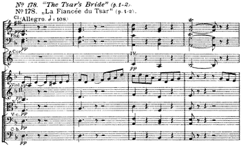
No. 179. “The Tsar’s Bride.”
No. 179. „La Fiancée du Tsar.“
[Vol. I p. 100]
[Listen] [XML] [PDF]
No. 180. “The Tsar’s Bride.”
No. 180. „La Fiancée du Tsar.“
[Vol. I p. 100]
[Listen] [XML] [PDF]
No. 181. “The Tsar’s Bride.”
No. 181. „La Fiancée du Tsar.“
[Vol. I p. 100]
[Listen] [XML] [PDF]
No. 182. “The Legend of Tsar Saltan.”
No. 182. „Légende du Tsar Saltan.“
[Vol. I p. 100]
[Listen] [XML] [PDF]
No. 183. “The Legend of Tsar Saltan.”
No. 183. „Légende du Tsar Saltan.“
[Vol. I p. 100]
[Listen] [XML] [PDF]
No. 184. “The Legend of Tsar Saltan.”
No. 184. „Légende du Tsar Saltan.“
[Vol. I p. 100]
[Listen] [XML] [PDF]
No. 185. “The Legend of Tsar Saltan.”
No. 185. „Légende du Tsar Saltan.“
[Vol. I p. 100]
[Listen] [XML] [PDF]
No. 186. “The Legend of Tsar Saltan.”
No. 186. „Légende du Tsar Saltan.“
[Vol. I p. 100]
[Listen] [XML] [PDF]
No. 187. “The Legend of Tsar Saltan” (p. 306).
No. 187. „Légende du Tsar Saltan“ (p. 306).
[Vol. I p. 100]
[Listen] [XML] [PDF]
No. 188. “The Legend of Tsar Saltan” (p. 416).
No. 188. „Légende du Tsar Saltan“ (p. 416).
[Vol. I p. 100]
[Listen] [XML] [PDF]
No. 189. “The Legend of Tsar Saltan” (p. 367).
No. 189. „Légende du Tsar Saltan“ (p. 367).
[Vol. I p. 100]
[Listen] [XML] [PDF]
No. 190. “Ivan the Terrible,” overture.
No. 190. „La Pskovitaine,“ ouverture.
[Vol. I p. 100]
[Listen] [XML] [PDF]
No. 191. “Ivan the Terrible,” overture.
No. 191. „La Pskovitaine,“ ouverture.
[Vol. I p. 100]
[Listen] [XML] [PDF]
No. 192. “Sheherazade” (p. 5).
No. 192. „Shéhérazade“ (p. 5).
[Vol. I p. 101]
[Listen] [XML] [PDF]
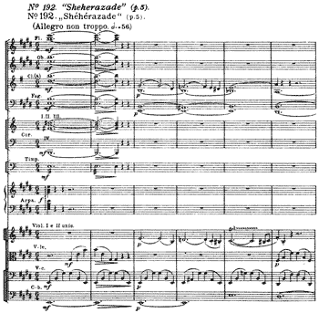
No. 193. “Sheherazade” (p. 8).
No. 193. „Shéhérazade“ (p. 8).
[Vol. I p. 101]
[Listen] [XML] [PDF]
No. 194. “Sheherazade” (p. 19).
No. 194. „Shéhérazade“ (p. 19).
[Vol. I p. 101]
[Listen] [XML] [PDF]
No. 195. “Sheherazade” (p. 38-39).
No. 195. „Shéhérazade“ (p. 38-39).
[Vol. I p. 101]
[Listen] [XML] [PDF]
No. 196. “The Legend of the invisible city of Kitesh.”
No. 196. „Légende de la ville invisible de Kitéj.“
[Vol. I p. 101]
[Listen] [XML] [PDF]
No. 197. “The Legend of the invisible city of Kitesh.”
No. 197. „Légende de la ville invisible de Kitéj.“
[Vol. I p. 101]
[Listen] [XML] [PDF]
No. 198. “The Legend of the invisible city of Kitesh.”
No. 198. „Légende de la ville invisible de Kitéj.“
[Vol. I p. 101]
[Listen] [XML] [PDF]
No. 199. “The Legend of the invisible city of Kitesh.”
No. 199. „Légende de la ville invisible de Kitéj.“
[Vol. I p. 101]
[Listen] [XML] [PDF]
No. 200. “The Legend of the invisible city of Kitesh.”
No. 200. „Légende de la ville invisible de Kitéj.“
[Vol. I p. 101]
[Listen] [XML] [PDF]
No. 201. “The Legend of the invisible city of Kitesh.”
No. 201. „Légende de la ville invisible de Kitéj.“
[Vol. I p. 101]
[Listen] [XML] [PDF]
No. 202. “The Golden Cockerel” (p. 298-299).
No. 202. „Le Coq d’Or“ (p. 298-299).
[Vol. I p. 101]
[Listen] [XML] [PDF]
No. 203. “The Golden Cockerel” (p. 309-310).
No. 203. „Le Coq d’Or“ (p. 309-310).
[Vol. I p. 101]
[Listen] [XML] [PDF]
No. 204. “Snegourotchka” (p. 267).
No. 204. „Sniégourotchka“ (p. 267).
[Vol. I p. 102]
[Listen] [XML] [PDF]
No. 205. “Sadko.”
No. 205. „Sadko.“
[Vol. I p. 102]
[Listen] [XML] [PDF]
No. 206. “Sadko.”
No. 206. „Sadko.“
[Vol. I p. 102]
[Listen] [XML] [PDF]

No. 207. “The Christmas Night.”
No. 207. „La Nuit de Noël.“
[Vol. I p. 102]
[Listen] [XML] [PDF]
No. 208. “The Christmas Night.”
No. 208. „La Nuit de Noël.“
[Vol. I p. 102]
[Listen] [XML] [PDF]
No. 209. “Sheherazade” (p. 123).
No. 209. „Shéhérazade“ (p. 123).
[Vol. I p. 102]
[Listen] [XML] [PDF]
No. 210. “Snegourotchka” (p. 176-177).
No. 210. „Sniégourotchka“ (p. 176-177).
[Vol. I p. 103]
[Listen] [XML] [PDF]
No. 211. “Snegourotchka” (p. 179-180).
No. 211. „Sniégourotchka“ (p. 179-180).
[Vol. I p. 103]
[Listen] [XML] [PDF]
No. 212. “Ivan the Terrible,” Act II.
No. 212. „La Pskovitaine,“ 2me acte.
[Vol. I p. 103]
[Listen] [XML] [PDF]
No. 213. “The Legend of the invisible city of Kitesh.”
No. 213. „Légende de la ville invisible de Kitéj.“
[Vol. I p. 103]
[Listen] [XML] [PDF]
No. 214. “The Legend of the invisible city of Kitesh.”
No. 214. „Légende de la ville invisible de Kitéj.“
[Vol. I p. 103]
[Listen] [XML] [PDF]
No. 215. “The Golden Cockerel.”
No. 215. „Le Coq d’Or.“
[Vol. I p. 103]
[Listen] [XML] [PDF]
No. 216. “Snegourotchka” (p. 148).
No. 216. „Sniégourotchka“ (p. 148).
[Vol. I p. 104]
[Listen] [XML] [PDF]
No. 217. “Russian Easter Fête.”
No. 217. „La Grande Pâque Russe.“
[Vol. I p. 104]
[Listen] [XML] [PDF]
No. 218. “The May Night” (p. 140).
No. 218. „La Nuit de Mai“ (p. 140).
[Vol. I p. 104]
[Listen] [XML] [PDF]
No. 219. “The Legend of the invisible city of Kitesh.”
No. 219. „Légende de la ville invisible de Kitéj.“
[Vol. I p. 104]
[Listen] [XML] [PDF]
No. 220. “The Legend of the invisible city of Kitesh.”
No. 220. „Légende de la ville invisible de Kitéj.“
[Vol. I p. 104]
[Listen] [XML] [PDF]
No. 221. “The Legend of the invisible city of Kitesh.”
No. 221. „Légende de la ville invisible de Kitéj.“
[Vol. I p. 104]
[Listen] [XML] [PDF]
No. 222. “Snegourotchka.”
No. 222. „Sniégourotchka.“
[Vol. I p. 105]
[Listen] [XML] [PDF]
No. 223. “Snegourotchka.”
No. 223. „Sniégourotchka.“
[Vol. I p. 105]
[Listen] [XML] [PDF]
No. 224. “The Legend of the invisible city of Kitesh.”
No. 224. „Légende de la ville invisible de Kitéj.“
[Vol. I p. 105]
[Listen] [XML] [PDF]
No. 225. “Snegourotchka.”
No. 225. „Sniégourotchka.“
[Vol. I p. 105]
[Listen] [XML] [PDF]
No. 226. “The Golden Cockerel.”
No. 226. „Le Coq d’Or.“
[Vol. I p. 105]
[Listen] [XML] [PDF]
No. 227. “Mlada,” Act II.
No. 227. „Mlada,“ 2me acte.
[Vol. I p. 106]
[Listen] [XML] [PDF]
No. 228. “The Legend of Tsar Saltan.”
No. 228. „Légende du Tsar Saltan.“
[Vol. I p. 106]
[Listen] [XML] [PDF]
No. 229. “The Golden Cockerel” (p. 227).
No. 229. „Le Coq d’Or“ (p. 227).
[Vol. I p. 106]
[Listen] [XML] [PDF]
No. 230. “Russian Easter Fête.”
No. 230. „La Grande Pâque Russe.“
[Vol. I p. 106]
[Listen] [XML] [PDF]
No. 231. “The Legend of the invisible city of Kitesh.”
No. 231. „Légende de la ville invisible de Kitéj.“
[Vol. I p. 106]
[Listen] [XML] [PDF]
No. 232. “The Golden Cockerel” (p. 282).
No. 232. „Le Coq d’Or“ (p. 282).
[Vol. I p. 107]
[Listen] [XML] [PDF]
No. 233. “The Golden Cockerel” (p. 141).
No. 233. „Le Coq d’Or“ (p. 141).
[Vol. I p. 107]
[Listen] [XML] [PDF]
No. 234. “Sheherazade” (p. 61).
No. 234. „Shéhérazade“ (p. 61).
[Vol. I p. 107]
[Listen] [XML] [PDF]
No. 235. “Snegourotchka” (p. 307).
No. 235. „Sniégourotchka“ (p. 307).
[Vol. I p. 107]
[Listen] [XML] [PDF]
No. 236. “Snegourotchka.”
No. 236. „Sniégourotchka.“
[Vol. I p. 107]
[Listen] [XML] [PDF]
No. 237. “The Christmas Night” (p. 312).
No. 237. „La Nuit de Noël“ (p. 312).
[Vol. I p. 108]
[Listen] [XML] [PDF]
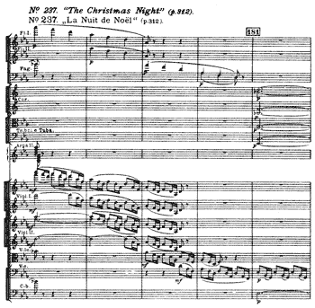
No. 238. “The Golden Cockerel” (p. 19).
No. 238. „Le Coq d’Or“ (p. 19).
[Vol. I p. 108]
[Listen] [XML] [PDF]
No. 239. “Ivan the Terrible,” Act II.
No. 239. „La Pskovitaine,“ 2me acte.
[Vol. I p. 109]
[Listen] [XML] [PDF]
No. 240. “The Tsar’s Bride.”
No. 240. „La Fiancée du Tsar.“
[Vol. I p. 109]
[Listen] [XML] [PDF]
No. 241. “The Tsar’s Bride” (p. 210).
No. 241. „La Fiancée du Tsar“ (p. 210).
[Vol. I p. 109]
[Listen] [XML] [PDF]
No. 242. “The Tsar’s Bride.”
No. 242. „La Fiancée du Tsar.“
[Vol. I p. 109]
[Listen] [XML] [PDF]
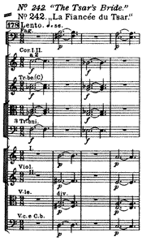
No. 243. “The Tsar’s Bride.”
No. 243. „La Fiancée du Tsar.“
[Vol. I p. 109]
[Listen] [XML] [PDF]
No. 244. “Snegourotchka.”
No. 244. „Sniégourotchka.“
[Vol. I p. 109]
[Listen] [XML] [PDF]
No. 245. “Snegourotchka.”
No. 245. „Sniégourotchka.“
[Vol. I p. 110]
[Listen] [XML] [PDF]
No. 246. “Servilia.”
No. 246. „Servilia.“
[Vol. I p. 110]
[Listen] [XML] [PDF]
No. 247. “The Tsar’s Bride.”
No. 247. „La Fiancée du Tsar.“
[Vol. I p. 110]
[Listen] [XML] [PDF]
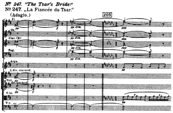
No. 248. “Russian Easter Fête.”
No. 248. „La Grande Pâque Russe.“
[Vol. I p. 110]
[Listen] [XML] [PDF]
No. 249. “The Legend of the invisible city of Kitesh.”
No. 249. „Légende de la ville invisible de Kitéj.“
[Vol. I p. 110]
[Listen] [XML] [PDF]
No. 250. “The Legend of the invisible city of Kitesh.”
No. 250. „Légende de la ville invisible de Kitéj.“
[Vol. I p. 110]
[Listen] [XML] [PDF]
No. 251. “Spanish Capriccio.”
No. 251. „Capriccio Espagnol.“
[Vol. I p. 110]
[Listen] [XML] [PDF]
No. 252. “Sadko.”
No. 252. „Sadko.“
[Vol. I p. 111]
[Listen] [XML] [PDF]
No. 253. “The Legend of the invisible city of Kitesh.”
No. 253. „Légende de la ville invisible de Kitéj.“
[Vol. I p. 111]
[Listen] [XML] [PDF]
No. 254. “The Tsar’s Bride” (p. 246-247).
No. 254. „La Fiancée du Tsar.“ (p. 246-247).
[Vol. I p. 112]
[Listen] [XML] [PDF]
No. 255. “Sheherazade,” 2nd movement.
No. 255. „Shéhérazade,“ 2me mouvement.
[Vol. I p. 112]
[Listen] [XML] [PDF]

No. 256. “The Tsar’s Bride.”
No. 256. „La Fiancée du Tsar.“
[Vol. I p. 113]
[Listen] [XML] [PDF]
No. 257. “The Tsar’s Bride” (p. 186).
No. 257. „La Fiancée du Tsar“ (p. 186).
[Vol. I p. 113]
[Listen] [XML] [PDF]
No. 258. “Mlada,” Act III.
No. 258. „Mlada,“ 3me acte.
[Vol. I p. 113]
[Listen] [XML] [PDF]
No. 259. “Mlada,” Act III.
No. 259. „Mlada,“ 3me acte.
[Vol. I p. 113]
[Listen] [XML] [PDF]
No. 260. “Sadko.”
No. 260. „Sadko.“
[Vol. I p. 113]
[Listen] [XML] [PDF]
No. 261. “Sadko.”
No. 261. „Sadko.“
[Vol. I p. 113]
[Listen] [XML] [PDF]
No. 262. “Antar.”
No. 262. „Antar.“
[Vol. I p. 114]
[Listen] [XML] [PDF]
No. 263. “The Golden Cockerel.”
No. 263. „Le Coq d’Or.“
[Vol. I p. 114]
[Listen] [XML] [PDF]
No. 264. “Pan Voyevoda,” introduction (p. 3).
No. 264. „Pan le Voïevode,“ introduction (p. 3).
[Vol. I p. 115]
[Listen] [XML] [PDF]
No. 265. “The Legend of Tsar Saltan.”
No. 265. „Légende du Tsar Saltan.“
[Vol. I p. 115]
[Listen] [XML] [PDF]
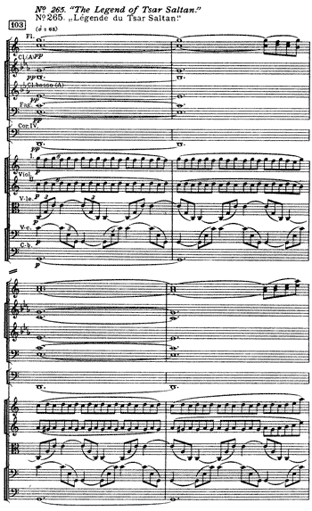
No. 266. “The Legend of Tsar Saltan.”
No. 266. „Légende du Tsar Saltan.“
[Vol. I p. 115]
[Listen] [XML] [PDF]
No. 267. “The Legend of the invisible city of Kitesh” (p. 488).
No. 267. „Légende de la ville invisible de Kitéj“ (p. 488).
[Vol. I p. 115]
[Listen] [XML] [PDF]
No. 268. “Kashtcheï the Immortal.”
No. 268. „Kachtchéï l’Immortel.“
[Vol. I p. 115]
[Listen] [XML] [PDF]
No. 269. “Kashtcheï the Immortal.”
No. 269. „Kachtchéï l’Immortel.“
[Vol. I p. 115]
[Listen] [XML] [PDF]
No. 270. “Mlada” (p. 166).
No. 270. „Mlada“ (p. 166).
[Vol. I p. 115]
[Listen] [XML] [PDF]
No. 271. “The Golden Cockerel.”
No. 271. „Le Coq d’Or.“
[Vol. I p. 115]
[Listen] [XML] [PDF]
No. 272. “The Legend of Tsar Saltan” (p. 179).
No. 272. „Légende du Tsar Saltan“ (p. 179).
[Vol. I p. 116]
[Listen] [XML] [PDF]
No. 273. “The Legend of Tsar Saltan” (p. 269).
No. 273. „Légende du Tsar Saltan“ (p. 269).
[Vol. I p. 116]
[Listen] [XML] [PDF]
No. 274. “The Legend of Tsar Saltan.”
No. 274. „Légende du Tsar Saltan.“
[Vol. I p. 116]
[Listen] [XML] [PDF]
No. 275. “Pan Voyevoda.”
No. 275. „Pan le Voïevode.“
[Vol. I p. 116]
[Listen] [XML] [PDF]
No. 276. “The Christmas Night” (p. 310).
No. 276. „La Nuit de Noël“ (p. 310).
[Vol. I p. 116]
[Listen] [XML] [PDF]
No. 277. “Snegourotchka.”
No. 277. „Sniégourotchka.“
[Vol. I p. 122]
[Listen] [XML] [PDF]
No. 278. “Sadko.”
No. 278. „Sadko.“
[Vol. I p. 122]
[Listen] [XML] [PDF]

No. 279. “Snegourotchka.”
No. 279. „Sniégourotchka.“
[Vol. I p. 122]
[Listen] [XML] [PDF]
No. 280. “The Tsar’s Bride.”
No. 280. „La Fiancée du Tsar.“
[Vol. I p. 123]
[Listen] [XML] [PDF]
No. 281. “Sadko” (p. 516).
No. 281. „Sadko“ (p. 516).
[Vol. I p. 123]
[Listen] [XML] [PDF]
No. 282. “The Tsar’s Bride” (p. 361).
No. 282. „La Fiancée du Tsar“ (p. 361).
[Vol. I p. 124]
[Listen] [XML] [PDF]
No. 283. “The Tsar’s Bride.”
No. 283. „La Fiancée du Tsar.“
[Vol. I p. 124]
[Listen] [XML] [PDF]
No. 284. “The Tsar’s Bride.”
No. 284. „La Fiancée du Tsar.“
[Vol. I p. 124]
[Listen] [XML] [PDF]
No. 285. “The Golden Cockerel.”
No. 285. „Le Coq d’Or.“
[Vol. I p. 125]
[Listen] [XML] [PDF]
No. 286. “The Tsar’s Bride.”
No. 286. „La Fiancée du Tsar.“
[Vol. I p. 125]
[Listen] [XML] [PDF]
No. 287. “Snegourotchka.”
No. 287. „Sniégourotchka.“
[Vol. I p. 126]
[Listen] [XML] [PDF]
No. 288. “The Tsar’s Bride.”
No. 288. „La Fiancée du Tsar.“
[Vol. I p. 126]
[Listen] [XML] [PDF]
No. 289. “Sadko.”
No. 289. „Sadko.“
[Vol. I p. 126]
[Listen] [XML] [PDF]
No. 290. “Sadko” (p. 150).
No. 290. „Sadko“ (p. 150).
[Vol. I p. 126]
[Listen] [XML] [PDF]
No. 291. “Sadko.”
No. 291. „Sadko.“
[Vol. I p. 126]
[Listen] [XML] [PDF]
No. 292a. “Sadko.”
No. 292a. „Sadko.“
[Vol. I p. 126]
[Listen] [XML] [PDF]
No. 292b. “Sadko.”
No. 292b. „Sadko.“
[Vol. I p. 126]
[Listen] [XML] [PDF]
No. 293. “The Tsar’s Bride” (p. 169).
No. 293. „La Fiancée du Tsar“ (p. 169).
[Vol. I p. 127]
[Listen] [XML] [PDF]
No. 294. “Ivan the Terrible,” Act I (p. 111).
No. 294. „La Pskovitaine,“ 1er acte (p. 111).
[Vol. I p. 127]
[Listen] [XML] [PDF]

No. 295. “Sadko.”
No. 295. „Sadko.“
[Vol. I p. 128]
[Listen] [XML] [PDF]
No. 296. “Ivan the Terrible,” Act II.
No. 296. „La Pskovitaine,“ 2me acte.
[Vol. I p. 128]
[Listen] [XML] [PDF]
No. 297. “Sadko” (p. 157).
No. 297. „Sadko“ (p. 157).
[Vol. I p. 128]
[Listen] [XML] [PDF]
No. 298. “Snegourotchka.”
No. 298. „Sniégourotchka.“
[Vol. I p. 129]
[Listen] [XML] [PDF]
No. 299. “Mlada,” Act III.
No. 299. „Mlada,“ 3me acte.
[Vol. I p. 130]
[Listen] [XML] [PDF]
No. 300. “Mlada.”
No. 300. „Mlada.“
[Vol. I p. 130]
[Listen] [XML] [PDF]
No. 301. “The Legend of the invisible city of Kitesh.”
No. 301. „Légende de la ville invisible de Kitéj.“
[Vol. I p. 131]
[Listen] [XML] [PDF]
No. 302. “Sadko.”
No. 302. „Sadko.“
[Vol. I p. 131]
[Listen] [XML] [PDF]
No. 303. “Sadko.” (p. 378).
No. 303. „Sadko.“ (p. 378).
[Vol. I p. 136]
[Listen] [XML] [PDF]
No. 304. “Sadko.”
No. 304. „Sadko.“
[Vol. I p. 137]
[Listen] [XML] [PDF]
No. 305. “The Legend of the invisible city of Kitesh.”
No. 305. „Légende de la ville invisible de Kitéj.“
[Vol. I p. 142]
[Listen] [XML] [PDF]
No. 306. “The Golden Cockerel” (p. 351).
No. 306. „Le Coq d’Or“ (p. 351).
[Vol. I p. 144]
[Listen] [XML] [PDF]
No. 307. “Sadko” (p. 210).
No. 307. „Sadko“ (p. 210).
[Vol. I p. 146]
[Listen] [XML] [PDF]
No. 308. “Sadko” (p. 226).
No. 308. „Sadko“ (p. 226).
[Vol. I p. 147]
[Listen] [XML] [PDF]
No. 309. “Ivan the Terrible” (p. 116).
No. 309. „La Pskovitaine“ (p. 116).
[Vol. I p. 147]
[Listen] [XML] [PDF]
No. 310. “Ivan the Terrible” (p. 117).
No. 310. „La Pskovitaine“ (p. 117).
[Vol. I p. 147]
[Listen] [XML] [PDF]

No. 311. “Sadko” (p. 441).
No. 311. „Sadko“ (p. 441).
[Vol. I p. 149]
[Listen] [XML] [PDF]
No. 312. “Ivan the Terrible,” Act III (the end).
No. 312. „La Pskovitaine,“ 3me acte (fin).
[Vol. I p. 148]
[Listen] [XML] [PDF]
Appendix. Single tutti chords.
Appendice. Accords isolés en tutti.
[Vol. I p. 102]
[PDF]
NOTE. These diagrams are given in semibreves. They do not include
percussion instruments of indeterminate sound or the human voice.
NOTA. Ces exemples sont donnés sous forme demi-schématique, en rondes.
Ils ne comportent ni les instruments de percussion à sons indéterminés,
ni les voix humaines.

CONTENTS
VOLUME I